THE TBB PHOTO JOURNAL
Moments from Bali.
A visual collection of places, experiences and journeys featured by Tour Bali Buddy. Select any photograph to explore its dedicated experience page.
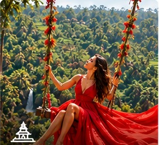
Ubud Activities & Culture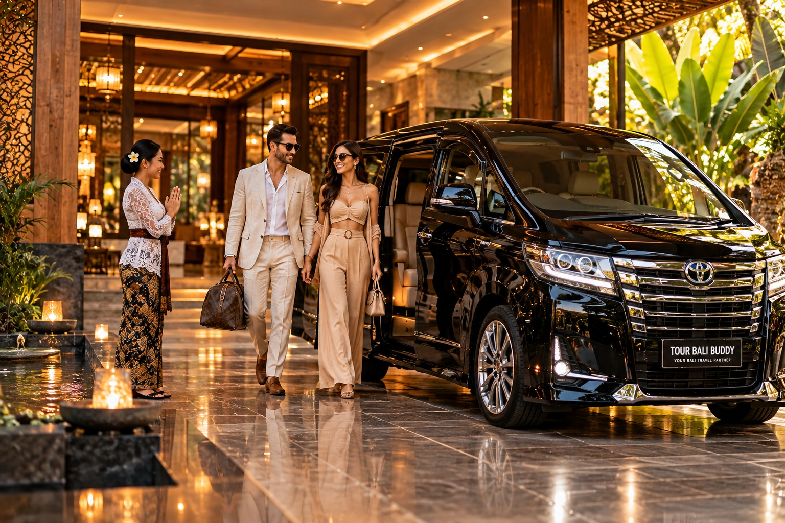
Luxury Experiences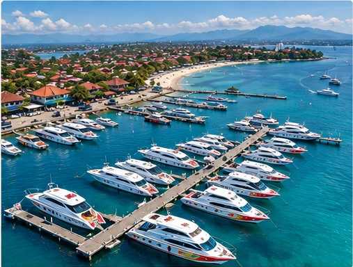
Fastboats & Island Travel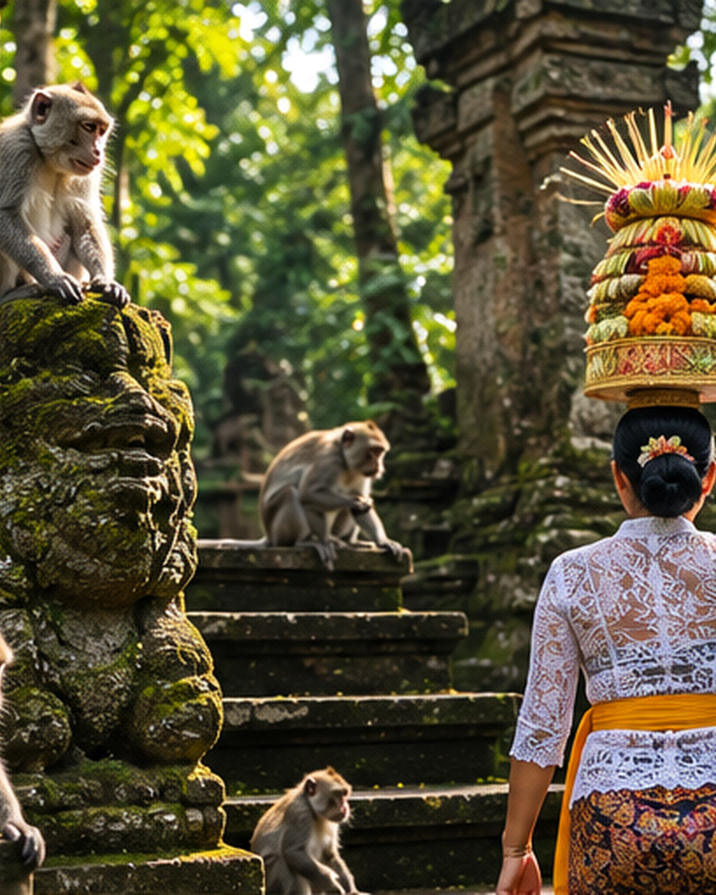
Ubud Highlights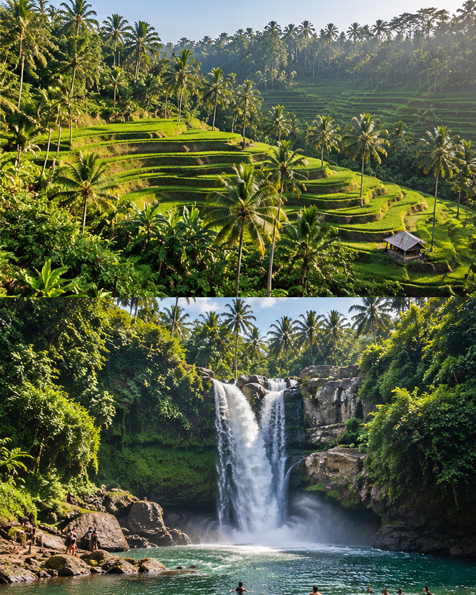
Rice Terraces & Waterfalls ATV Ride
ATV Ride Buggy Ride
Buggy Ride White-Water Rafting
White-Water Rafting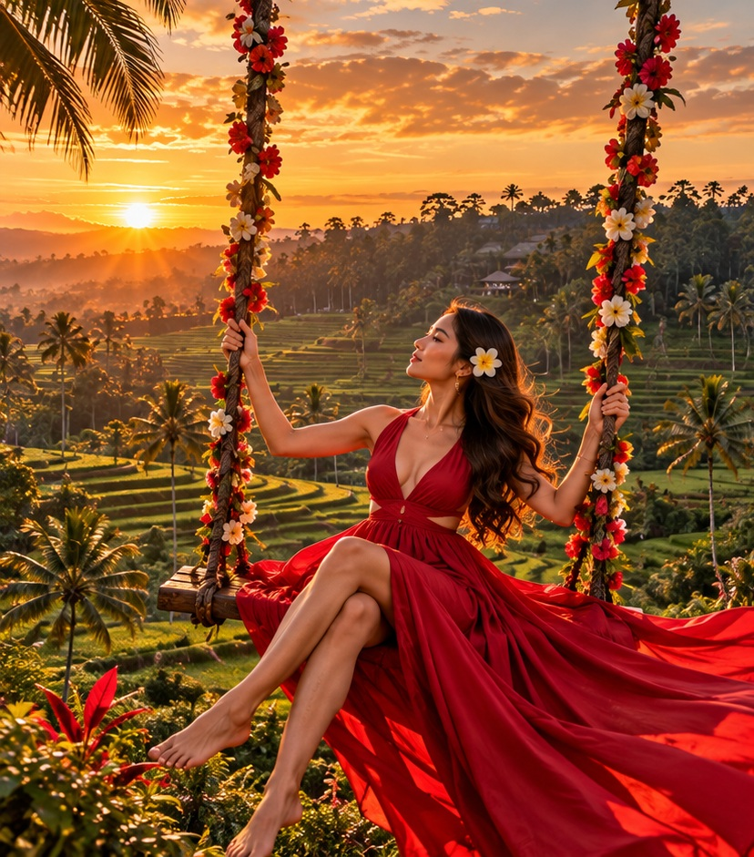
Bali Swings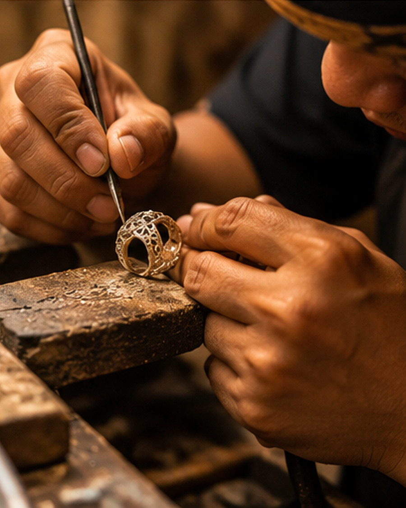
Silver & Gold Jewellery Workshop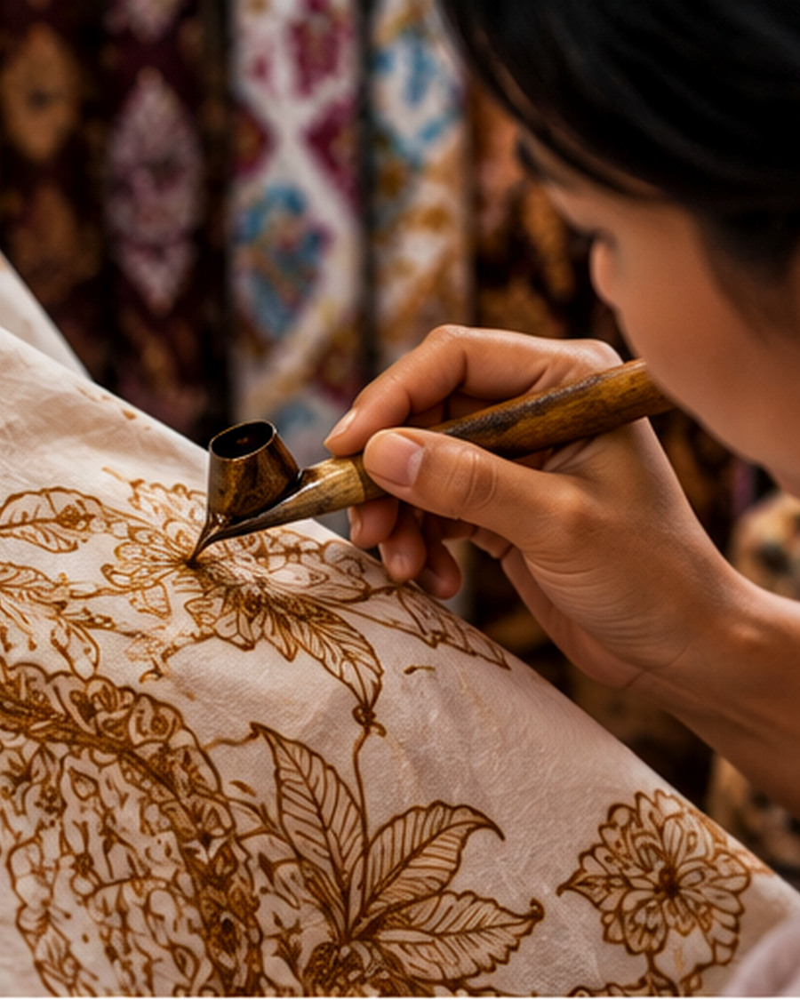
Batik Workshop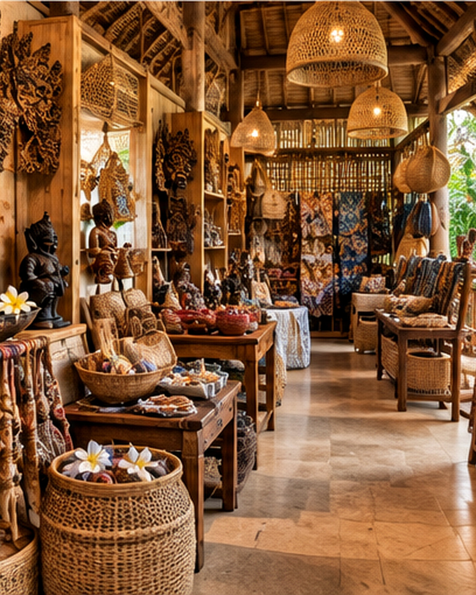
Souvenir & Handicraft Shopping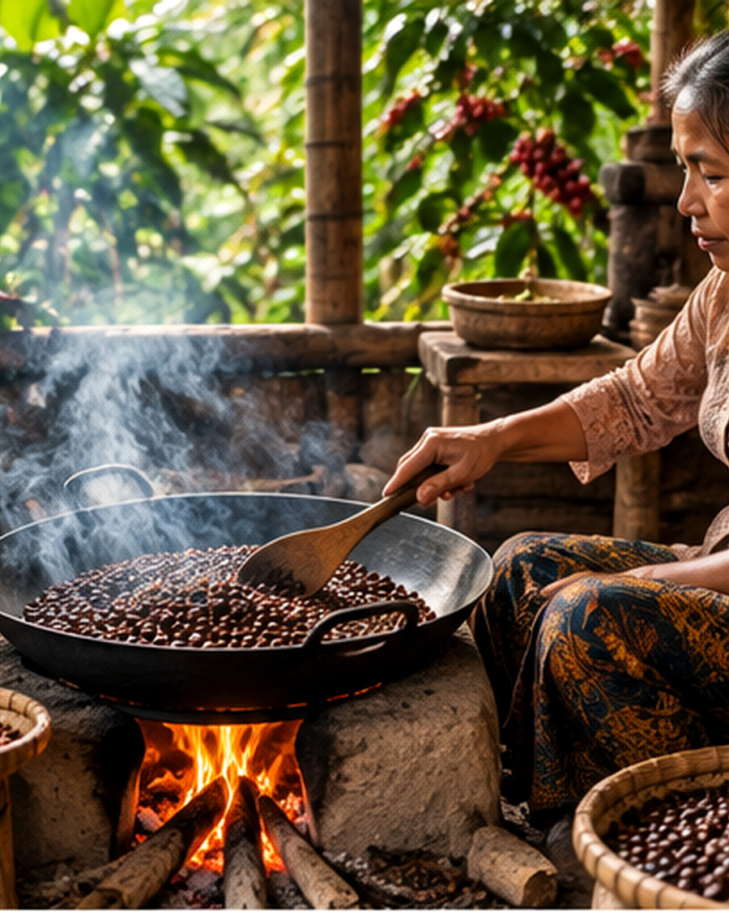
Luwak Coffee PlantationMount Batur Sunrise JeepBatur Bird Nest Café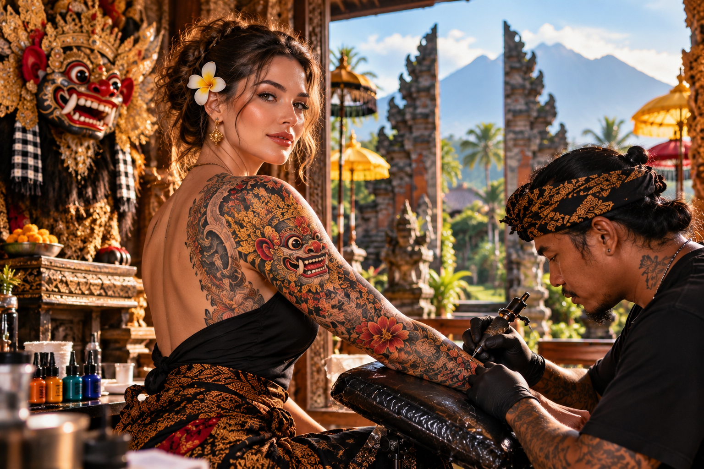
Tattoo Appointment AssistanceFastboat to Nusa Islands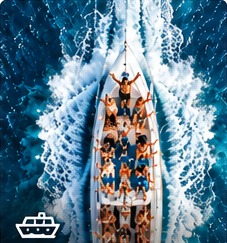
Fastboat to Gili Islands@TOURBALIBUDDY
OPEN INSTAGRAM ↗Follow our latest journeys and updates on Instagram.
Note: This first version uses the photographs already referenced by your website. They are not represented as a verified export of your 18 latest Instagram posts. To display the exact Instagram posts, provide 18 post URLs or connect an approved Instagram feed.